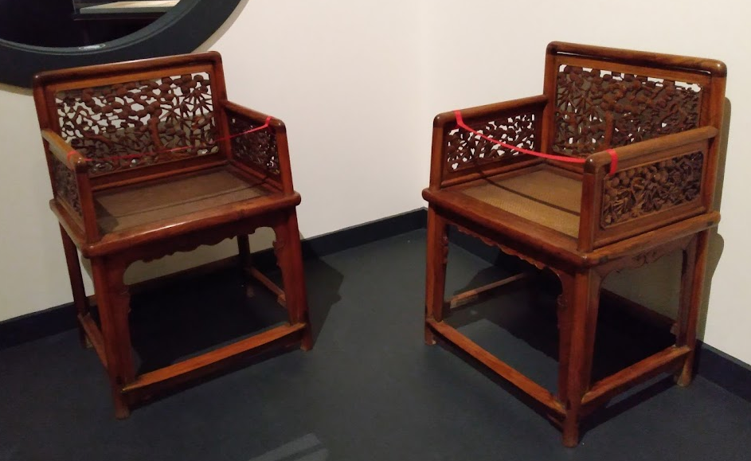

II - A Virtual Confucian House
Sitting Area
Uprightness Chairs
The straight form of these chairs is a reminder of the Confucian ideas on uprightness. Confucius believed that uprightness is an important quality for a ruler to have. To be able to maintain an orderly state, a ruler must be upright and direct with orders even if one is at fault. If a ruler fails to do so, he is not a ‘true gentleman’ and the state will fall into disorder.
Plum Blossom Vase
Plum blossoms symbolizes virtue, which is described as “power” within one’s self and moral worthiness. In the Shang, it was believed to be power that a ruler received after winning the blessings from the ancestral spirits. In the Zhou, it was seen as a gift from Heaven for proper ritual conduct. Confucius believed that anyone who is true to the Way can attain Virtue.
The Five Virtues of Confucianism are: 1. Benevolence 仁 (ren) 2. Righteousness 義 (yi) 3. Trustworthiness 信 (xin) 4. Propriety 禮(li) 5. Wisdom 智(zhi). Although created during Korea’s Choson Dynasty, the influence of Confucianism outside of China is evident.